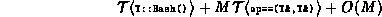
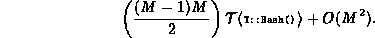
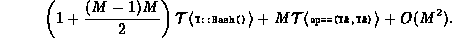

Data Structures and Algorithms
with Object-Oriented Design Patterns in C++
Data Structures and Algorithms
with Object-Oriented Design Patterns in C++
Computing a tight bound on the worst-case running time of
Program  is tricky.
Assuming the item to be removed is actually in the table,
then the time required to find the item (lines 3-9) is
is tricky.
Assuming the item to be removed is actually in the table,
then the time required to find the item (lines 3-9) is

in the worst case.
The worst-case running time of the main loop occurs when the table is full, there is only one chain, and no items can be safely moved up in the chain. In this case, the running time of the main loop (lines 10-32) is

Finally, the worst case running time of the last loop (lines 35-43) is O(M).
Therefore, the worst-case running time of the Withdraw function for chained scatter tables is

Clearly we don't want to be removing items from a chained scatter table very often!
 Copyright © 1997 by Bruno R. Preiss, P.Eng. All rights reserved.
Copyright © 1997 by Bruno R. Preiss, P.Eng. All rights reserved.